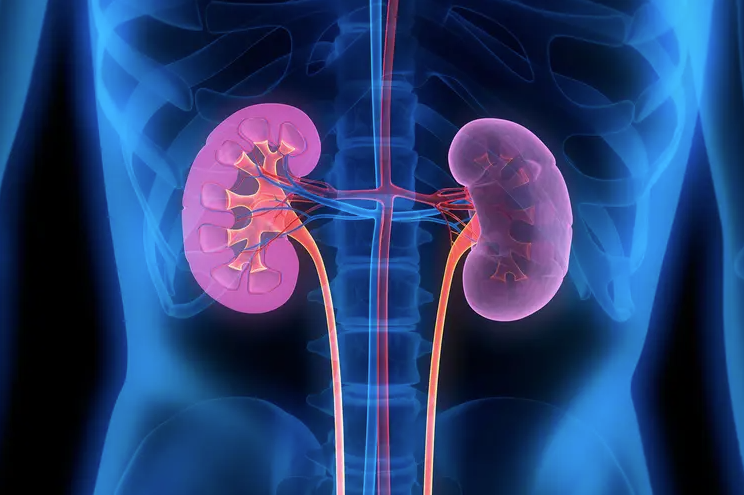
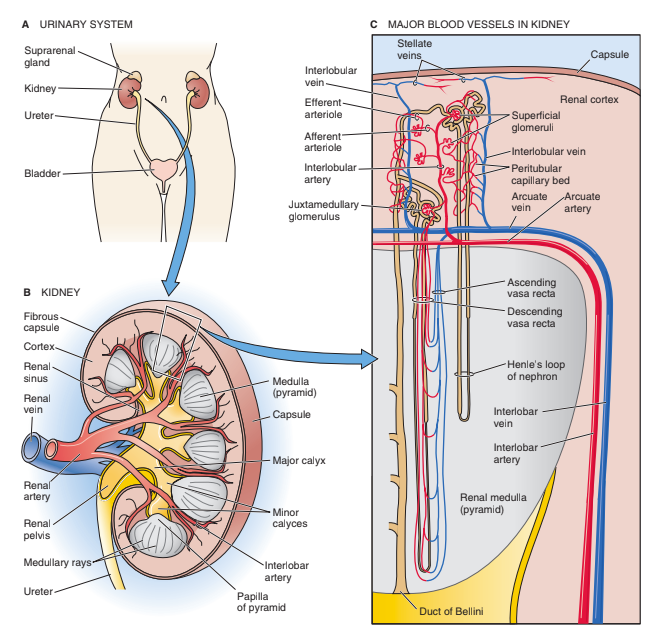
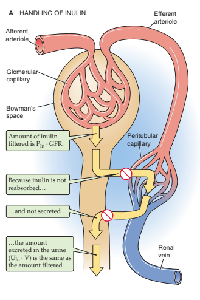
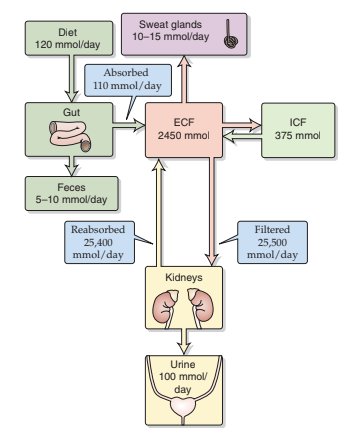
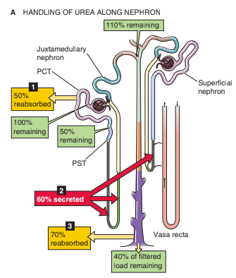
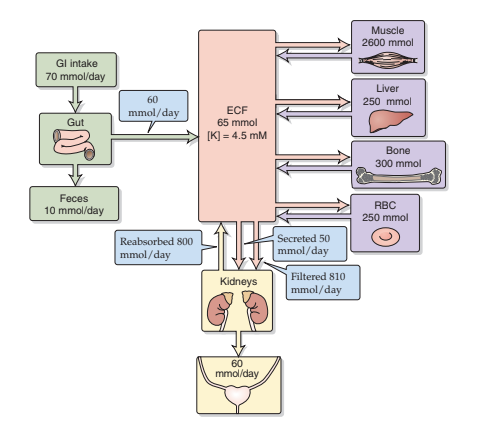
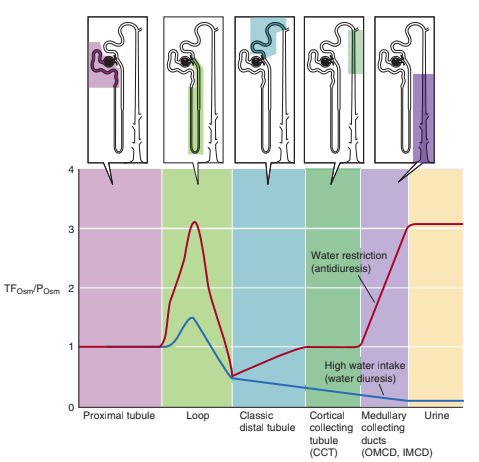
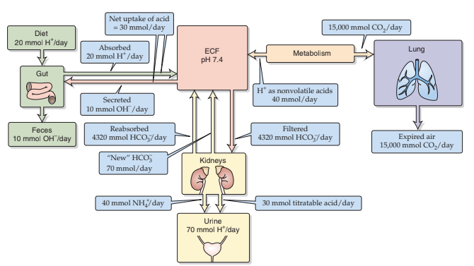
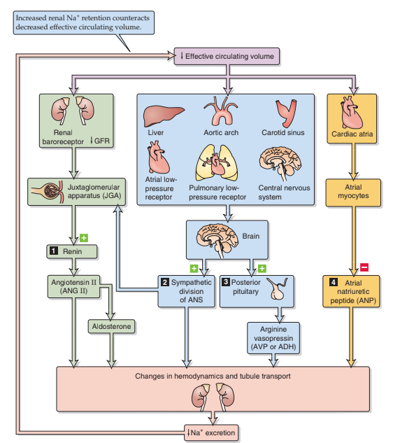

The kidney is a marvel of biological design. A compact organ that embodies the wonder and mystery of physiology itself. Within its intricate architecture, millions of nephrons work in perfect synchrony to filter blood, balance electrolytes, regulate blood pressure, and maintain the body’s delicate internal equilibrium. Renal physiology is both complex and elegant: from the selective permeability of glomerular membranes to the finely tuned transport systems along the nephron, every process is a lesson in precision and adaptation. To study the kidney is to explore physiology at its most refined. An area where molecular signaling, cellular specialization, and systemic integration converge in a symphony of function. Few organs reveal the principles of homeostasis and biological harmony as profoundly as the kidney, making its study not only intellectually rewarding but essential to understanding the very essence of life’s regulation.
This page was created to serve as a shared foundation for members of the Nelson Lab as a resource to align our understanding of the fundamental principles that govern renal physiology. By revisiting the essential mechanisms of kidney function, from filtration and tubular transport to hormonal regulation and cellular signaling, we establish a common language for exploring the unknown. Our research often ventures into uncharted territory, where new discoveries about kidney cell types, regeneration, and disease mechanisms depend on a deep grasp of physiological context. This shared foundation ensures that every member approaches these mysteries with the same conceptual grounding, enabling us to interpret data thoughtfully, design experiments effectively, and contribute collectively to advancing the frontier of kidney science.
Each topic on this page corresponds to sections from Medical Physiology by Walter F. Boron and Emile L. Boulpaep; one of the most comprehensive and insightful texts on human physiology. The material is organized to build a structured understanding of renal function, from the fundamental principles of filtration and reabsorption to the complex regulatory mechanisms and pathophysiological states that define kidney biology.
Following each topic, you’ll find a short multiple-choice quiz designed to help reinforce key concepts. When taking a quiz, please enter your name in the provided field and select the answers you believe are correct. The purpose of these quizzes is reflection, not assessment—they’re meant to strengthen retention, highlight areas that may need revisiting, and encourage active engagement with the material.
Important: Please do not use Google, ChatGPT, or other external resources to find answers. The goal is to challenge your own understanding and identify where your reasoning is strong and where it might need more reinforcement. The best learning happens when you think critically, revisit the text, and connect each physiological mechanism to the broader picture of kidney function.
After each quiz, Jonathan will review the topic with you and suggest additional resources to help clarify or deepen your understanding where needed.
Some topics also include supplementary materials and references that relate directly to ongoing or planned projects in the Nelson Lab. These are intended to help bridge textbook learning with the real-world research questions we explore together.








This page was last edited on 7/10/2026 by Kevin Shih